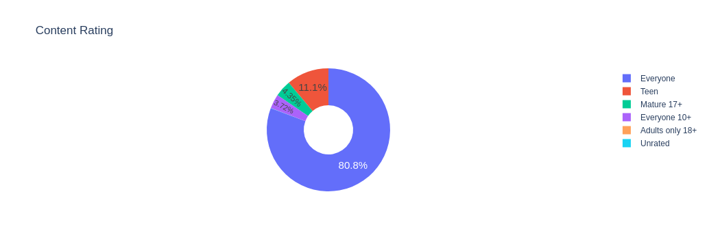

Visualising Data
Matplotlib
To create a graph of a DataFrame use the plot() method. Pandas creates
a line plot by default for each of the Series in a DataFrame
that has numeric values. All the plots created by Pandas are Matplotlib
objects. The matplotlib.pyplot library provides the show() method
to display the graph. First import pyplot:
import pandas as pd
import matplotlib.pyplot as plt
For a DataFrame with a DatetimeIndex and a single numeric column,
you can call plot directly on the DataFrame, or pass the
axes to pyplot:
daily_df = ws_df.groupby(pd.Grouper(freq='D')).agg({
'CostInBillingCurrency': 'sum',
})
daily_df.plot()
## Alternate method:
# plt.plot(daily_df.index, daily_df.values)
Using the plot method on the DataFrame might provide better default
formatting of axes and labels. However, you can customise the parameters
to plt.plot. For instance, instead of supplying the actual date,
you can provide the day:
plt.plot(daily_df.index.day, daily_df.values)
Use selection criteria on your DataFrame to choose which Series to plot.
plt.plot(df.index, df['java'])
You can use slicing to drop elements from the plot:
plt.plot(df.index[:-1], df['java'][:-1])
You can create a scatter plot by specifying a format string as the third
argument. By also specifying data= we can refer to the columns by name
rather than as series objects:
plt.plot('EffectivePrice', 'UnitPrice', 'rx', data=df)
Format strings are three-part formats to specify:
- Colour: [b = blue, k = black, r = red, g = green, m = magenta, c = cyan]
- Marker: ['.', ',', 'o', 'v', ...., 'x' ]
- Linestyle: ['-', '--', '-.', ':']
Histograms involve assigning values to 'bins' that can then be plotted by their frequency:
plt.hist(ws_df.UnitPrice, bins=10, color='skyblue', edgecolor='black')
# Adding labels and title
plt.xlabel('Costs')
plt.ylabel('Frequency')
plt.title('Cost Distributions')
plt.savefig('reports/cost_distributions.png')
Note the use of savefig method to save the plot to a PNG file.
Plot Components
The Figure object is the top-level component for matplotlib
visualisations. Use the figure method to create a figure:
fig = plt.figure()
The subplots method can be used to create a Figure with
Axes objects for subplots:
fig, axes = plt.subplots(nrows=2,ncols=2)
The above code creates a Figure with Axes for 4 plots laid-out in two rows and two columns.
You can also create layouts by specifying a figure size and then
adding axes. Axes are specified
as [left, bottom, width, height] as proportions of the figure size:
figure = plt.figure( figsize = ( 9, 9 ) )
# Add axes [ 'left', 'bottom', 'width', 'height' ]
bottom_left = figure.add_axes( [ 0, 0, 3/9, 5/9 ] )
top_left = figure.add_axes([ 0, 6/9, 3/9, 3/9 ] )
top_right = figure.add_axes( [ 4/9, 6/9, 5/9, 3/9 ] )
bottom_right = figure.add_axes( [4/9, 0, 5/9, 5/9 ] )
bottom_left.plot( [500, 600, 700], [22, 24, 26])
top_right.plot( [1,2,3,4], [2,4,6,8])
add_axes can be used to add plots inside other plots:
fig = plt.figure(figsize=(9,9))
outside = fig.add_axes([0.1, 0.1, 0.95, 0.95])
inside = fig.add_axes([0.5, 0.5, 0.25, 0.25])
You can also plot mulitple columns on the same graph, and add some graph formating:
plt.figure(figsize=(16,10))
plt.xticks(fontsize=14)
plt.yticks(fontsize=14)
plt.xlabel('Date', fontsize=14)
plt.ylabel('No of Posts', fontsize=14)
plt.ylim(0,35000)
plt.plot(df.index, df['java'])
plt.plot(df.index, df['python'])
To plot multiple columns use a for loop:
plt.figure(figsize=(16,10))
plt.xticks(fontsize=14)
plt.yticks(fontsize=14)
plt.xlabel('Date', fontsize=14)
plt.ylabel('No of Posts', fontsize=14)
plt.ylim(0,35000)
for column in df.columns:
plt.plot(df.index, df[column], linewidth=3, label=df[column].name)
plt.legend(fontsize=14)
For time series data you can specify a rolling mean to smooth out the data: instead of plotting the value of each data point, you can specify a window to calculate an average value for each data point based on the values either side of the data point:
df['rolling_mem'] = df.mem_used_percent.rolling('3D').mean()
To calculate a rolling average, your time-series data must be monotonic:
that is the index must change in equal steps. Missing dates are not allowed.
Check for monotonicity using either df.index.is_monotonic_increasing or
df.index.is_monotonic_decreasing.
Whereas a rolling window calculates an aggregate from the values within the
specified window, an expanding window, calculates the aggregate for all values up to
the current value, that is a cumulative aggregate.
sub_df['CumulativeCost'] = sub_df['CostInBillingCurrency'].expanding().sum('CostInBillingCurrency')
The same assignment can be made using the cumsum function:
sub_df['CumulativeCost'] = sub_df['CostInBillingCurrency'].cumsum()
Plotting two columns with varying value-ranges can look untidy and make trend-spotting difficult. Instead you can specify two different y-axes for each plot to make comparison easier:
ax1 = plt.gca() # gets the current axis
ax2 = ax1.twinx() # create another axis that shares the same x-axis
ax1.plot(sets_by_year.index[:-2], sets_by_year.set_num[:-2], color='g')
ax2.plot(themes_by_year.index[:-2], themes_by_year.nr_themes[:-2], color='b')
ax1.set_xlabel('Year')
ax1.set_ylabel('Number of Sets', color='g')
ax2.set_ylabel('Number of Themes', color='b')
If your xticks overlap, you can specify a rotation to make them readable:
plt.xticks(fontsize=14, rotation=45)
You can also use locator functions for marking the x- and y- axes:
import pandas as pd
import matplotlib.pyplot as plt
import matplotlib.dates as mdates
df_unemployment = pd.read_csv('UE Benefits Search vs UE Rate 2004-19.csv')
df_unemployment['MONTH'] = pd.to_datetime(df_unemployment['MONTH'])
roll_df = df_unemployment[['UE_BENEFITS_WEB_SEARCH', 'UNRATE']].rolling(window=6).mean()
roll_df['month'] = df_unemployment['MONTH']
plt.figure(figsize=(16,10))
plt.title('Rolling Web Searches vs Unemployment Rate', fontsize=20)
plt.xticks(fontsize=14, rotation=45)
plt.yticks(fontsize=14)
ax1 = plt.gca()
ax2 = ax1.twinx()
ax1.grid(color='gray', linestyle='--')
ax1.set_ylabel('Web Searches', fontsize=16, color='indianred')
ax2.set_ylabel('Unemployment Rate', fontsize=16, color='cadetblue')
ax1.set_xlim(roll_df.month[5:].min(), roll_df.month[5:].max())
years = mdates.YearLocator()
months = mdates.MonthLocator()
years_fmt = mdates.DateFormatter('%Y')
ax1.xaxis.set_major_locator(years)
ax1.xaxis.set_major_formatter(years_fmt)
ax1.xaxis.set_minor_locator(months)
ax1.plot(roll_df.month[5:], roll_df.UE_BENEFITS_WEB_SEARCH[5:], color='indianred', linewidth=3, marker='o')
ax2.plot(roll_df.month[5:], df_unemployment.UNRATE[5:], color='cadetblue', linewidth=3)
Pandas provides a number of graph types including line, area, bar, pie and scatter:
plt.plotfor a line chartplt.scatterfor a scatter plotplt.barfor a bar chart
Plotly
Bar charts are a good way to visualise 'categorical' data. You can use
value_counts() to quickly create categorical data:
ratings = df.value_counts('Content_Rating')
Given a dataframe that contains the following data:
Content_Rating
Everyone 6621
Teen 912
Mature 17+ 357
Everyone 10+ 305
Adults only 18+ 3
Unrated 1
Name: count, dtype: int64
we can present this as a pie chart using plotly:
fig = px.pie(
labels=ratings.index,
values=ratings.values,
names=ratings.index,
title="Content Rating"
)
fig.show()
We can change the location of the text on the pie chart using update_traces():
fig = px.pie(
labels=ratings.index,
values=ratings.values,
title='Content Rating',
names=ratings.index,
)
fig.update_traces(
textposition='outside',
textinfo='percent+label'
)
fig.show()
To format the pie chart as a 'doughnut chart' add the 'hole' parameter:
fig = px.pie(
labels=ratings.index,
values=ratings.values,
title='Content Rating',
names=ratings.index,
hole=0.4
)
fig.update_traces(
textposition='inside',
textfont_size=15,
textinfo='percent'
)
fig.show()
Which produces:
